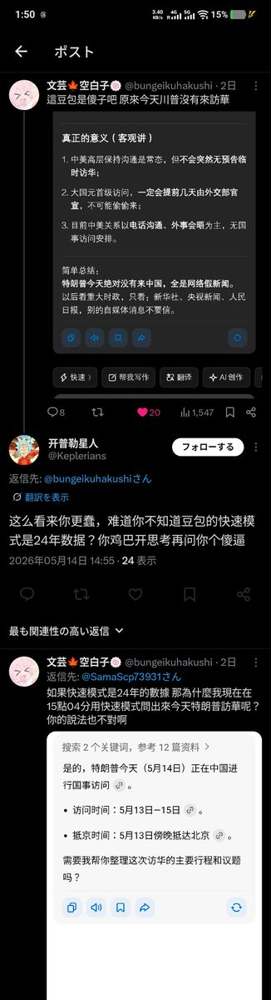
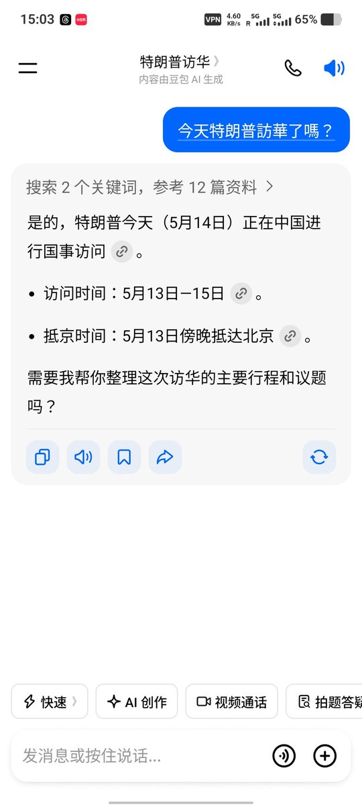

有些人真的是很討人厭的 幾天前我就在推特上share個meme 就有個傻子在我留言區上罵我 post如下圖 我反駁他之後就懒得和他爭了 就把他b了 沒想到這個死仆街啊 追到我的tg群上罵我 說我反駁他用的是思考模式 不是快速模式 我平時的脾氣真的是不想罵人的 但想不到個傻逼這麼傻 好像變了態一樣 有病



有d人真嘅好乞人憎㗎 幾天前我就係推特上share個meme喇 就有個傻閪喺我留言區鬧我 post如下圖 我反駁左佢之後懒得同佢爭 就把佢b左 冇諗到呢個正仆街啊 追到我嘅tg群嚟鬧我 話我反駁佢用嘅係思考模式 唔係快速模式 我平時嘅脾氣真嘅唔想鬧人嘅 但諗唔到個傻閪咁閪傻 好似變左態噉 https://t.co/dWcsIatY81 https://t.co/REFgg1kUMx